Session 312 · review page · Cohort one: fifteen trees, read by eye
This morning you ruled that each part's spec lives in its meta: its anatomy, its states, what it fires, and its bindings to tokens. An extractor read those four out of the fifteen reference pages this afternoon. Nothing is inscribed until you answer; every draft is marked reviewed: false.
01 · Where it stands, and how to read a tree
Pasted from the extractor's report: 119 parts not yet drafted, 4 fenced (alias seats), 1 exempt (the example). Recommendation on the fifteen: Yes on 8, Change it on 7.
Full coverage is not the same as right. It means every name points at something real; it does not mean the tree describes the part. An independent check read all fifteen by eye this evening: the button's tree is plainly wrong (it is the Loading specimen), and the table's and the metric's are weak. All three now recommend Change it, and each says why. The other twelve were read the same way and their recommendations stand.
Four words run through every tree. Here is what each means to a designer, so the trees below read without a glossary.
The named pieces a part is made of, nested the way they sit: a date picker is a label, a box with an input and a calendar button, a message, and a panel with a head, a weekday row and a grid. Names are what you would point at. A small red tag marks where a state lands on a piece (disabled, selected); a grey tag marks where a choice of yours lands (the button's type, the metric's trend). ×6 means six of the same, drawn once.
The looks a part can be in, with the one it rests in marked. Rest, hover, pressed, focus, disabled are the usual five; open, selected, expanded, error and the rest are the part's own. Keys say what the keyboard does. The draft also records how each look moves to the next; that is behind Technical.
What a part listens to (clicks, keys) and what it fires: the messages it sends out to the page when something happens in it, such as a tab chosen or a date picked. Every draft today says fires nothing, because the reference pages only react and never send a message out. So each part comes with a proposal in plain names; Yes takes the proposal.
The lines from a part's colours and measures to the tokens: the primary fill at rest is button / primary / background / default. Each line was checked against the token store. This is what lets another library paint the part in Apollo's colours.
02 · Menus and select · which part is which?
The split button's flyout is the only true menu in the cohort, a list of actions. The dropdown is a select: one value chosen from a list of options. Another lane's name-matcher sends both your words to the dropdown, which is why this is a call and not a footnote.
Which parts are menus and select? Recommendation: menus = split button, select = dropdown. They are the two parts that actually carry a menu and a select.
04 · Tabs · does this tree describe the part?
The tree reads the strip (tablist) with its tabs, the overflow trigger and its menu, and the indicator line, then the panels, one per tab, with their text. Six tabs and six panels collapse to one of each, marked ×6.
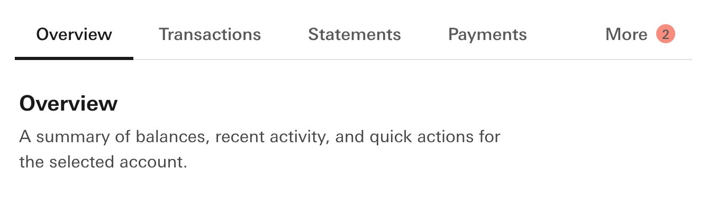
Keys ArrowDown next · ArrowLeft previous · ArrowRight next · ArrowUp previous · End last · Escape close · Home first
Listens click, keydown
Fires nothing yet — the reference page sends no message out. Proposed:
--tabs-active → tabs / active--tabs-background → tabs / background--tabs-standard-border → tabs / standard-border--tabs-overflow-border → tabs / overflow-border--tabs-overflow-background → tabs / overflow-background--text-default → text / default--text-reverse → text / reverse--tertiary-hover → tertiary / background / hover--tertiary-pressed → tertiary / background / pressed--focus-ring → focus / ring--page → background / default--border-radius-control → border-radius / control--border-radius-surface → border-radius / surface--border-radius-indicator → border-radius / indicatorDoes this tree describe the part? Recommendation: Yes. The strip, the indicator, the overflow and the panels are all there and named by their own class words.
body > div.tabs, found by name affinity 3 (div.tabs). Parts 9 after collapsing 10 repeated siblings. Source knowledge/snippets/Tabs.reference.html; drafted by extract_spec.py @ 312-L2 on 2026-10-01; reviewed: false.emits: [] on disk: the snippet dispatches no CustomEvent, so `emits` is the positive empty list; what the part should fire is Dave's call on the review pageshowroom/tabs.html; reference knowledge/snippets/Tabs.reference.html; picture cut at the root selector by notes/_lanes/312/L/render_312L.py shots.05 · Table · does this tree describe the part?
The tree starts at the scroll region (so keyboard users can scroll it), then the table, its caption and sub-line, the header row with its cells, and the body rows with a row-header cell, three cells and a number cell, each holding a value span.
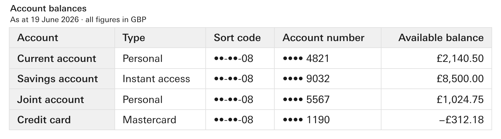
Listens click
Fires nothing yet — the reference page sends no message out. Proposed:
--header → table / header / background--colhdr → table / column / background--cell → background / default--border → table / border--text → text / default--muted → text / secondary--hover → tertiary / background / hover--focus → focus / ring--page → background / default--border-radius-control → border-radius / control--border-radius-surface → border-radius / surface--border-radius-indicator → border-radius / indicatorDoes this tree describe the part? Recommendation: Change it. Three things, none of them covered by the calls below: start the tree at the table, with the scrolling box as an optional wrapper rather than the part itself; take pressed out (it belongs to the demo switcher above the table, not the table); and make the caption and the cells holes for the title and rows the table already has as choices, not the demo's account names and balances. The caption, header row, body rows and number cells are right.
body > div.wrap > div.scroll, found by name affinity 3 (table.table) → climbed to div.scroll. Parts 16 after collapsing 8 repeated siblings. Source knowledge/snippets/Table.reference.html; drafted by extract_spec.py @ 312-L2 on 2026-10-01; reviewed: false.emits: [] on disk: the snippet dispatches no CustomEvent, so `emits` is the positive empty list; what the part should fire is Dave's call on the review pageshowroom/table.html; reference knowledge/snippets/Table.reference.html; picture cut at the root selector by notes/_lanes/312/L/render_312L.py shots.06 · Date picker · does this tree describe the part?
The picture has the panel open. The tree reads the label row, the help line, the box (input and calendar button), the message, then the panel: its head (four arrows, the month title), the weekday row and the grid.
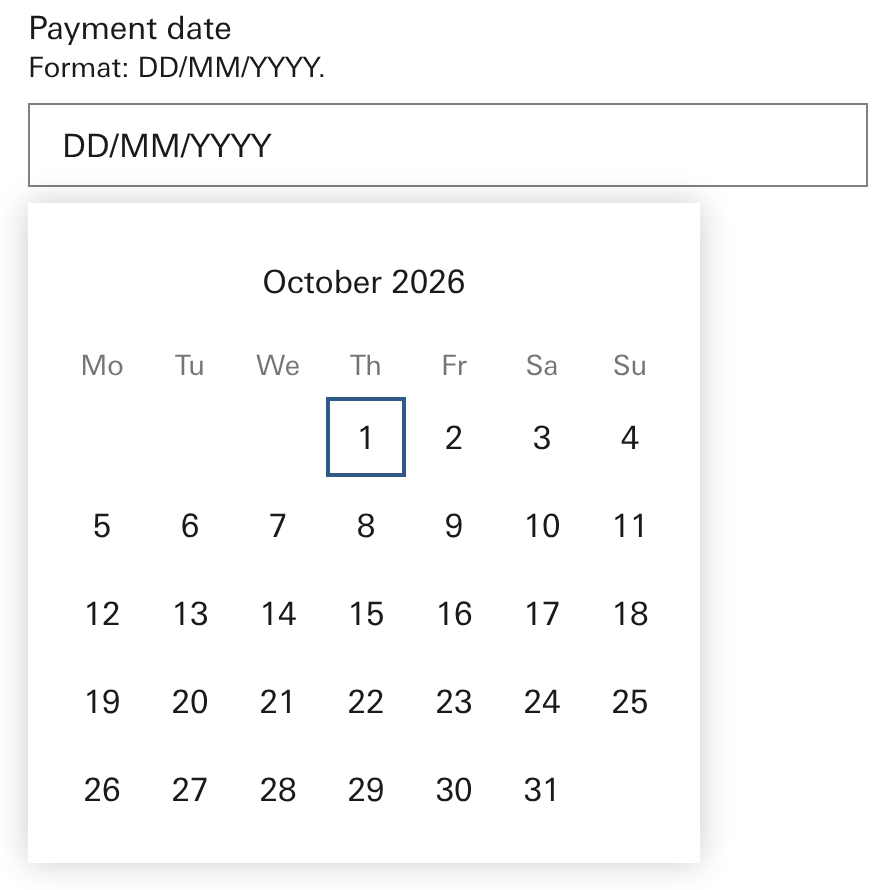
Keys Space activate · ArrowDown next · ArrowLeft previous · ArrowRight next · ArrowUp previous · End last · Enter activate · Escape close · Home first · PageDown next-page · PageUp previous-page · Tab focus-next
Listens blur, click, input, keydown, mousedown, pointerdown, touchstart
Fires nothing yet — the reference page sends no message out. Proposed:
--page → background / default--text → text / default--text-disabled → text / disabled--field-bg-default → form / background / default--field-bg-hover → form / background / hover--border-default → form / border / default--border-active → form / border / active--border-disabled → form / border / disabled--icon → icon / default--icon-disabled → icon / disabled--error → rag / error--success → rag / success--focus → focus / ring--pop-border → elevation / border--shadow → elevation / functional--border-radius-control → border-radius / control--border-radius-surface → border-radius / surface--press-travel → component-type / button-family / press-travel--press-darken → component-type / button-family / press-darkenDoes this tree describe the part? Recommendation: Change it. Add the day part: a day cell in the grid, with today, selected, empty and disabled as its states. A designer sees the days first; the tree should too. Say so in the comment, or write your own list.
body > div.dp, found by name affinity 2 (div.dp). Parts 17 after collapsing 9 repeated siblings. Source knowledge/snippets/Date-picker.reference.html; drafted by extract_spec.py @ 312-L2 on 2026-10-01; reviewed: false.emits: [] on disk: the snippet dispatches no CustomEvent, so `emits` is the positive empty list; what the part should fire is Dave's call on the review pageshowroom/date-picker.html; reference knowledge/snippets/Date-picker.reference.html; picture cut at the root selector by notes/_lanes/312/L/render_312L.py shots.07 · Metric · does this tree describe the part?
The tree reads the label, the value with its unit span and figure span, the delta with its glyph (an icon), figure and period, and the spark container holding the inline chart. The delta's direction (up, down) is a prop hole on its class.
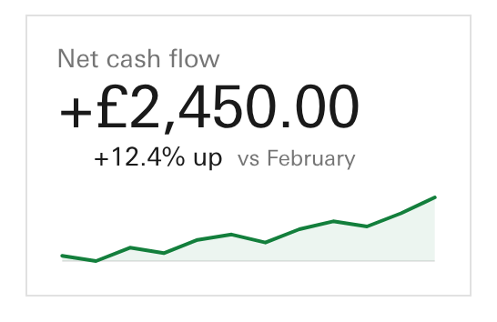
Listens nothing
Fires nothing yet — the reference page sends no message out. Proposed:
--surface → tertiary / background / default--border → border / subtle--text → text / default--muted → text / secondary--page → background / default--focus → focus / ring--pos-ink → rag / success-ink--neg-ink → rag / error-ink--flat-ink → text / default--border-radius-surface → border-radius / surface--tbl-header → table / header / background--tbl-colhdr → table / column / background--tbl-cell → background / default--tbl-border → table / borderDoes this tree describe the part? Recommendation: Change it. Name the two figures: the value and the change are what a tile is read for, and the draft calls them span and span-2, the two least telling names in the tree. Take busy out; it is loading said twice. The five declared states, the trend choice on the delta and the spark slot are right and stay.
body > div.board > div.metric, found by name affinity 3 (div.metric). Parts 12 after collapsing 0 repeated siblings. Source knowledge/snippets/Metric.reference.html; drafted by extract_spec.py @ 312-L2 on 2026-10-01; reviewed: false.emits: [] on disk: the snippet dispatches no CustomEvent, so `emits` is the positive empty list; what the part should fire is Dave's call on the review pageshowroom/metric.html; reference knowledge/snippets/Metric.reference.html; picture cut at the root selector by notes/_lanes/312/L/render_312L.py shots.09 · Accordion · does this tree describe the part?
The picture has the first item open. The tree reads the accordion, an item (two collapse to one), its head with the words span and the chevron with its icon, and the panel with its inner wrapper.
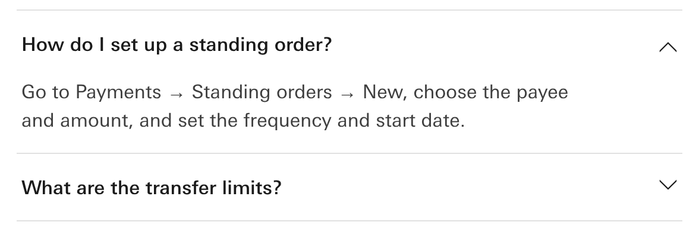
Listens click
Fires nothing yet — the reference page sends no message out. Proposed:
--rule → border / subtle--text → text / default--icon → icon / default--hover → tertiary / background / hover--focus → focus / ring--page → background / defaultDoes this tree describe the part? Recommendation: Yes. Item, head, chevron, panel: the tree is the part.
body > div.acc, found by name affinity 2 (div.acc). Parts 8 after collapsing 1 repeated siblings. Source knowledge/snippets/Accordion.reference.html; drafted by extract_spec.py @ 312-L2 on 2026-10-01; reviewed: false.emits: [] on disk: the snippet dispatches no CustomEvent, so `emits` is the positive empty list; what the part should fire is Dave's call on the review pageshowroom/accordion.html; reference knowledge/snippets/Accordion.reference.html; picture cut at the root selector by notes/_lanes/312/L/render_312L.py shots.10 · Slider · does this tree describe the part?
The picture shows a track and a thumb; the tree does not. The browser draws those two from the range input, so the extractor, which reads elements, cannot see them. The draft has four parts and two states (rest, focus).
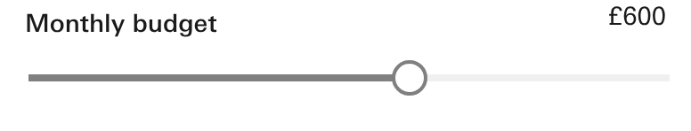
Listens input
Fires nothing yet — the reference page sends no message out. Proposed:
--filled → scrollbar / foreground--unfilled → scrollbar / background--handle → tertiary / background / default--handle-bd → form / border / default--text → text / default--focus → focus / ring--page → background / default--border-radius-indicator → border-radius / indicatorDoes this tree describe the part? Recommendation: Change it. Name the thumb and the track as parts, with hover, active and disabled, even though the markup has no element for them. A client library will have elements for both; the tree should describe what you see, not what the browser hides.
body > div.field, found by name affinity 3 (input.slider) → climbed to div.field. Parts 4 after collapsing 0 repeated siblings. Source knowledge/snippets/Slider.reference.html; drafted by extract_spec.py @ 312-L2 on 2026-10-01; reviewed: false.emits: [] on disk: the snippet dispatches no CustomEvent, so `emits` is the positive empty list; what the part should fire is Dave's call on the review pageshowroom/slider.html; reference knowledge/snippets/Slider.reference.html; picture cut at the root selector by notes/_lanes/312/L/render_312L.py shots.11 · Switch (drafted as the selection-controls family) · does this tree describe the part?
Your word was switch. Switch has no meta of its own; it is one branch of the selection-controls family, so the picture shows the switch rows first and the whole family below. In the tree the switch is field-3: the switch input with its label, and inside the label the knob (span-2) holding the thumb.
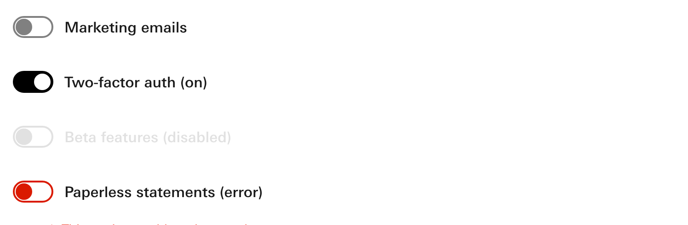
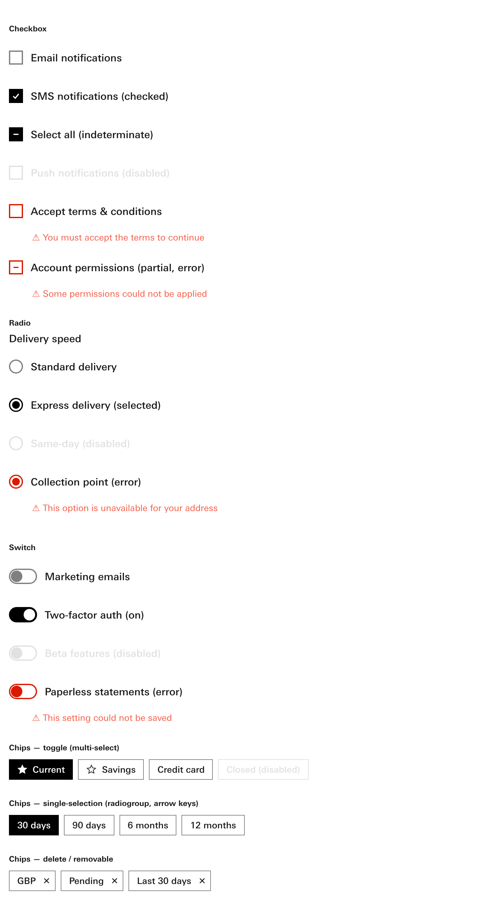
Keys ArrowDown next · ArrowLeft previous · ArrowRight next · ArrowUp previous · End last · Home first
Listens change, click, keydown
Fires nothing yet — the reference page sends no message out. Proposed:
--focus → focus / ring--ctrl-border → form / border / default--ctrl-border-active → form / border / active--ctrl-border-disabled → form / border / disabled--checked → secondary / background / default--glyph → text / on-inverse--label → text / default--label-disabled → text / disabled--error → rag / error--error-atom → rag / error-ink--page → background / default--chip-hover → form / background / hover--chip-pressed → form / background / pressed--reverse → text / reverse--border-radius-control → border-radius / controlDoes this tree describe the part? Recommendation: Change it. Give the switch its own tree (switch, label, knob, thumb; states off, on, disabled, error), and the same for checkbox, radio and chip. One tree for four controls will not describe any of them to a client library. Whether that is four metas or four roots in one is the comment to leave.
body > div.sc, found by name affinity 2 (div.sc). Parts 29 after collapsing 20 repeated siblings. Source knowledge/snippets/Selection-controls.reference.html; drafted by extract_spec.py @ 312-L2 on 2026-10-01; reviewed: false.emits: [] on disk: the snippet dispatches no CustomEvent, so `emits` is the positive empty list; what the part should fire is Dave's call on the review pageshowroom/selection-controls.html; reference knowledge/snippets/Selection-controls.reference.html; picture cut at the root selector by notes/_lanes/312/L/render_312L.py shots.12 · Text input (drafted as the input-fields family) · does this tree describe the part?
Your word was text input. The input-fields family is the nearest meta: single-line, large and multi-line inputs in one. The tree reads the first one on the page, an amount field with a prefix (GBP) and a tail button.
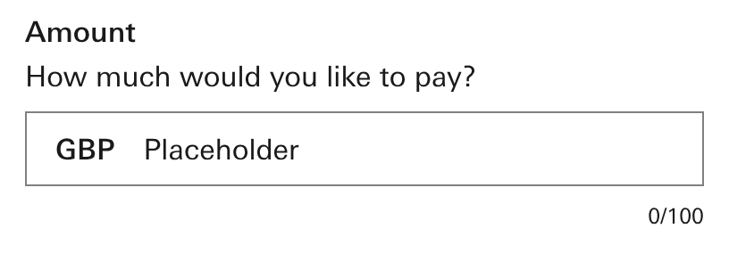
Keys Tab focus-next
Listens input, keydown, mousedown, touchstart
Fires nothing yet — the reference page sends no message out. Proposed:
--alpha-60 → alpha / 60--field-bg-default → form / background / default--field-bg-hover → form / background / hover--border-default → form / border / default--border-active → form / border / active--border-disabled → form / border / disabled--text → text / default--text-disabled → text / disabled--icon → icon / default--icon-disabled → icon / disabled--error → rag / error--success → rag / success--focus → focus / ring--page → background / default--border-radius-control → border-radius / controlDoes this tree describe the part? Recommendation: Yes. Label row, help, box, count: the tree is the field. The mixed state list is a schema question asked once below, not a reason to send this back.
body > div.field, found by name affinity 3 (input.textbox) → climbed to div.box → climbed to div.field. Parts 13 after collapsing 0 repeated siblings. Source knowledge/snippets/Input-fields.reference.html; drafted by extract_spec.py @ 312-L2 on 2026-10-01; reviewed: false.emits: [] on disk: the snippet dispatches no CustomEvent, so `emits` is the positive empty list; what the part should fire is Dave's call on the review pageshowroom/input-fields.html; reference knowledge/snippets/Input-fields.reference.html; picture cut at the root selector by notes/_lanes/312/L/render_312L.py shots.13 · Select (drafted as the dropdown) · does this tree describe the part?
Your word was select. The dropdown meta holds the custom listbox and the native select in one; the tree is the custom one, with its list open in the picture. Five options collapse to one, marked ×5.
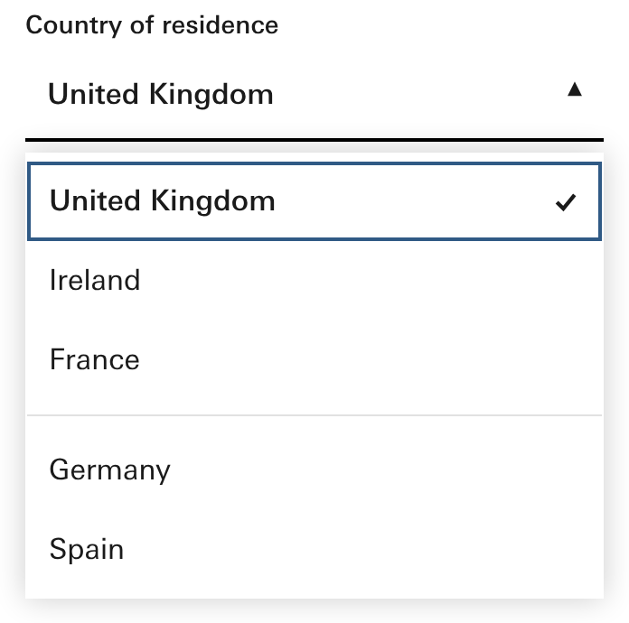
Keys Space activate · ArrowDown next · ArrowUp previous · Enter activate · Escape close
Listens click, keydown
Fires nothing yet — the reference page sends no message out. Proposed:
--focus → focus / ring--field-bg-hover → form / background / hover--border → form / border / default--border-active → form / border / active--menu-surface → background / default--menu-border → elevation / border--shadow → elevation / functional--divider → divider / border / section--text → text / default--icon → icon / default--error → rag / error--page → background / default--border-radius-control → border-radius / control--border-radius-surface → border-radius / surfaceDoes this tree describe the part? Recommendation: Yes. Trigger, value, chevron, list, option, tick: it describes the part. The native select can join in phase 2.
body > div.row > div > div.dd, found by first non-harness candidate. Parts 9 after collapsing 4 repeated siblings. Source knowledge/snippets/Dropdown.reference.html; drafted by extract_spec.py @ 312-L2 on 2026-10-01; reviewed: false.emits: [] on disk: the snippet dispatches no CustomEvent, so `emits` is the positive empty list; what the part should fire is Dave's call on the review pageshowroom/dropdown.html; reference knowledge/snippets/Dropdown.reference.html; picture cut at the root selector by notes/_lanes/312/L/render_312L.py shots.14 · Dialog (drafted as the modals family) · does this tree describe the part?
Your word was dialog. The modals family's first member is the dialog, so the tree starts at the scrim (overlay) and the dialog inside it, whose kind (dialog, sheet) is a prop hole on its class. The picture is the dialog open on its scrim.
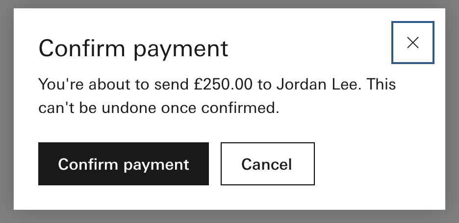
Keys Escape close · Tab focus-next
Listens click, keydown
Fires nothing yet — the reference page sends no message out. Proposed:
--alpha-84 → alpha / 84--surface → tertiary / background / default--elev-bd → elevation / border--shadow → elevation / functional--overlay → overlay / version1--text → text / default--icon → icon / default--pri → button / primary / background / default--pri-hover → button / primary / background / hover--on-pri → button / primary / label / default--sec-bd → tertiary / border / default--sec-hover → tertiary / background / hover--focus → focus / ring--page → background / default--border-radius-control → border-radius / control--border-radius-surface → border-radius / surface--press-travel → component-type / button-family / press-travel--press-darken → component-type / button-family / press-darkenDoes this tree describe the part? Recommendation: Change it. Take inert and disabled out of the dialog's states; they belong to the page. The parts are right.
body > div.overlay, found by hint: the meta is the Modals family, the snippet's root class is `overlay` > `dialog`; no class or role shares a token with 'modals' (aria-modal is an attribute). Parts 9 after collapsing 0 repeated siblings. Source knowledge/snippets/Modals.reference.html; drafted by extract_spec.py @ 312-L2 on 2026-10-01; reviewed: false.emits: [] on disk: the snippet dispatches no CustomEvent, so `emits` is the positive empty list; what the part should fire is Dave's call on the review pageshowroom/modals.html; reference knowledge/snippets/Modals.reference.html; picture cut at the root selector by notes/_lanes/312/L/render_312L.py shots.15 · Tooltip · does this tree describe the part?
The picture has the tip shown. The tree is small: the wrapper, the trigger with its icon, and the tip. The words the trigger sits beside (Available balance) are context on the page, not part of the tooltip.
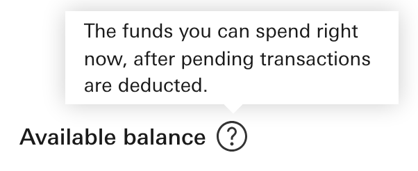
Keys Escape close
Listens blur, focus, keydown, mouseenter, mouseleave
Fires nothing yet — the reference page sends no message out. Proposed:
--focus → focus / ring--surface → background / default--tip-border → elevation / border--shadow → elevation / functional--text → text / default--page → background / defaultDoes this tree describe the part? Recommendation: Yes. Trigger, icon, tip: there is nothing else to a tooltip.
body > div.row > span.lbl > span.tip-wrap, found by name affinity 3 (span.tip) → climbed to span.tip-wrap. Parts 4 after collapsing 0 repeated siblings. Source knowledge/snippets/Tooltip.reference.html; drafted by extract_spec.py @ 312-L2 on 2026-10-01; reviewed: false.emits: [] on disk: the snippet dispatches no CustomEvent, so `emits` is the positive empty list; what the part should fire is Dave's call on the review pageshowroom/tooltip.html; reference knowledge/snippets/Tooltip.reference.html; picture cut at the root selector by notes/_lanes/312/L/render_312L.py shots.16 · Pagination · does this tree describe the part?
The tree reads the nav, its list, a control item (two collapse to one: previous and next) with its button and icon, a page item (five collapse to one) with its link, and the ellipsis item with its span. The current page is a hole on the link's aria-current.
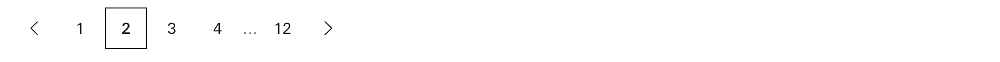
Keys Space activate · ArrowLeft previous · ArrowRight next · End last · Home first
Listens click, keydown
Fires nothing yet — the reference page sends no message out. Proposed:
--text → text / default--disabled → text / disabled--icon → icon / default--current-bd → tertiary / border / default--hover → form / background / hover--pressed → tertiary / background / pressed--on-pressed → text / reverse--focus → focus / ring--page → background / defaultDoes this tree describe the part? Recommendation: Yes. Controls, pages, current, ellipsis: it describes the part once the words are plain.
body > nav.pg, found by name affinity 1 (nav.pg). Parts 9 after collapsing 5 repeated siblings. Source knowledge/snippets/Pagination.reference.html; drafted by extract_spec.py @ 312-L2 on 2026-10-01; reviewed: false.emits: [] on disk: the snippet dispatches no CustomEvent, so `emits` is the positive empty list; what the part should fire is Dave's call on the review pageshowroom/pagination.html; reference knowledge/snippets/Pagination.reference.html; picture cut at the root selector by notes/_lanes/312/L/render_312L.py shots.17 · Notification · does this tree describe the part?
The tree reads the bar (role alert), the icon wrapper with its icon, the main span with the bold title, text spans (three collapse to one) and a link, and the dismiss button with its icon. The picture is the error one, the richest of the two on the page.
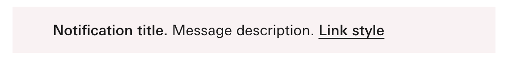
Listens click, transitionend
Fires nothing yet — the reference page sends no message out. Proposed:
--err → rag / error--warn → rag / warning--ok → rag / success--info → rag / information--err-t → rag / error-tint--warn-t → rag / warning-tint--ok-t → rag / success-tint--info-t → rag / information-tint--text → text / default--page → background / default--border-radius-surface → border-radius / surface--border-alpha → notification / contextual / border / alphaDoes this tree describe the part? Recommendation: Yes. Icon, message, title, link, dismiss: the parts are right. Making the kind a prop instead of five states is a cleanup for the rule on words.
body > div.nwrap > div.note.tint.err, found by first non-harness candidate → richest of 2 instances. Parts 9 after collapsing 2 repeated siblings. Source knowledge/snippets/Notifications.reference.html; drafted by extract_spec.py @ 312-L2 on 2026-10-01; reviewed: false.emits: [] on disk: the snippet dispatches no CustomEvent, so `emits` is the positive empty list; what the part should fire is Dave's call on the review pageshowroom/notifications.html; reference knowledge/snippets/Notifications.reference.html; picture cut at the root selector by notes/_lanes/312/L/render_312L.py shots.18 · The words · three rules the fifteen trees need
Each of these shows up in several trees above. Settling them once here means the drafts can be fixed by rule in phase 2 instead of part by part.
Where a piece has no class in the markup, the draft uses its tag: the table's rows and cells are tr, tr-2, td, v-2; the dialog's title and body are h2 and p; pagination's items are li, li-2, li-3, a. A designer would say row, cell, value, title, body, item, page link. The reference pages are not edited today, so the names would be set by hand, once per part, when a cohort is ratified.
When the markup gives a piece no name, what should the tree call it? Recommendation: plain words, set by hand when each cohort is ratified. A client library will map to the names; tr-2 will not survive that.
Ten parts rest in default (their meta says so). The split button and the dialog rest in closed, because they open. The metric rests in ready, from its own state model. Three words for one idea. The schema has an initial field that names the rest state whatever it is called, so the choice is between one word everywhere and each part's own word.
What is the rest state called? Recommendation: each part’s own word. A closed dialog is closed, not default; the initial field already says which state is rest.
Today a tree has one list of states for the whole part. So the date picker's list holds the field's states, the message's words (ok, info, warning), the panel's and a day's (today, selected) all together, each marked with where it was read from. The text input and the notification have the same mix. The alternative is for each piece to carry its own states: the message has ok, info, warning; the day has today, selected, empty; the field has rest, hover, focus, disabled, error. That is a schema change, done in phase 2.
Should states live on the pieces that show them? Recommendation: yes, in phase 2. A message’s warning and a day’s today are not states of the field; a client library needs to know which piece changes.
19 · Anything else
Anything else on this page?